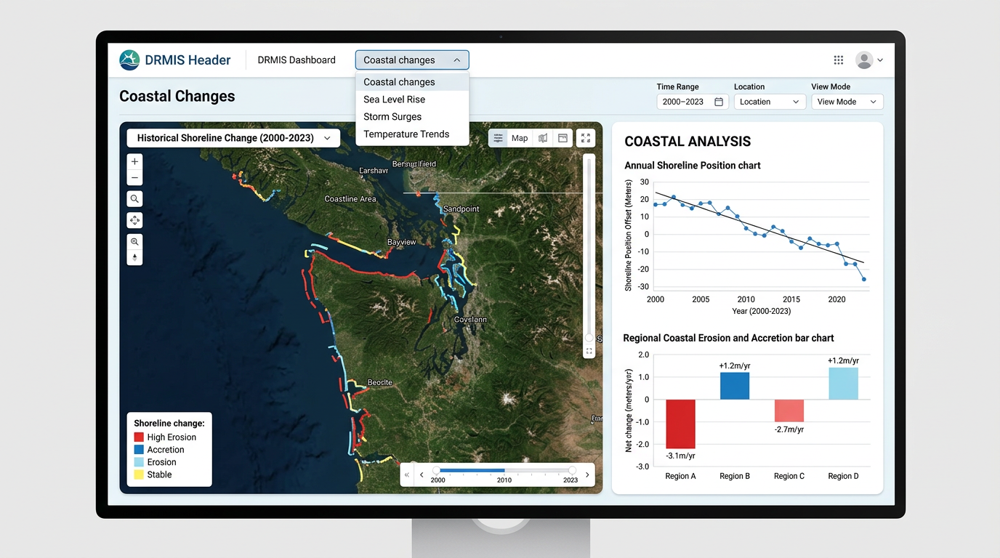
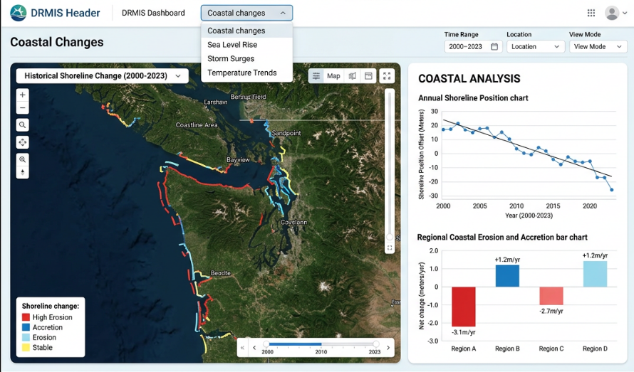

DRMIS — Disaster Risk Management Information System
Below is a conceptual mockup of the Climate view within the unified DRMIS dashboard for Vanuatu. Disaster and Climate are the same dashboard; the header toggle switches between them. A dropdown selects the active climate module — when one is chosen (e.g. Coastal changes), only that module's indicators and maps are displayed; no mixing of content from other modules. Shown with DRMIS header, module dropdown, map, and context panel.

Sample: Coastal Changes module — Below is a reference layout showing the module dropdown, map with legend and time slider, and context panel with shoreline charts:

Disaster and Climate are within the same dashboard. A toggle button in the header switches between the two views — users stay in one unified DRMIS dashboard and switch modes via the toggle. One system logo (DRMIS — blue shield with bars) is used for both; no separate MIS logo.
User avatar dropdown — When the user clicks the avatar, a dropdown opens with:
Logout is already in this dropdown; no separate logout control is needed in the main navigation.
The design draws on established international practices:
Based on the Coastal Changes sample mockup. Disaster and Climate share the same dashboard; the header toggle switches between them.
| Area | Content |
|---|---|
| Left | DRMIS logo, title, subtitle |
| Center | Disaster / Climate toggle |
| Right | Module dropdown (Climate mode only), Time range, Location, View mode filters; Theme toggle; User avatar |
| Zone | Width | Content |
|---|---|---|
| Map area | ~65–70% | Module title (e.g. "Coastal Changes"); Map with layer dropdown, zoom/pan/search controls; Single legend (bottom-left overlay); Time slider (bottom) |
| Context panel | ~30–35% | Section title (e.g. "COASTAL ANALYSIS"); Module-specific charts (line, bar); No duplicate legend |
| Zone | Purpose |
|---|---|
| Top row | Overview KPI cards (optional); Module dropdown; Shared filters |
| Map | Primary visualization — selected module's layers only; no mixing |
| Context panel | Filters, charts, drill-down — module-specific; no duplicate legend |
Benefits: follows international standards; clear hierarchy; optimized for climate data exploration.
Use a dropdown to switch between the seven climate modules. Do not display all indicators from all modules at once — when one module is selected, only that module's content is shown:
Example: When "Coastal changes" is selected, only coastal-related indicators, maps, and charts are displayed. No mixing with Land Use, Flood Risk, or other modules.
| Module | Right panel content |
|---|---|
| Land Use / Land Cover | Legend, class breakdown (pie/bar), area stats |
| Coastal changes | Single legend (shoreline change: High Erosion, Accretion, Erosion, Stable), time slider, shoreline position chart, erosion/accretion stats |
| Flood Risk | Risk level legend, historical events, probability chart |
| Climate indicators | Time series, trend charts, anomaly maps |
| Marine heat waves | Duration/intensity chart, heat map legend |
| Coral reef mapping | Reef health legend, coverage %, bleaching index |
| Soil health | Soil type legend, health index, degradation metrics |
Reuse existing controls: AreaSelect (province, area council), YearSelect, AttributeFilterSelect, DownloadDataDialog. Add a Time range control for modules that need multi-year or seasonal views.
All labels, metrics, legends, and dropdowns should use actual real-world accurate text — no placeholders or gibberish. Examples:
ClimateSection — module dropdown; when selected, show only that module's layers and context panel contentContextPanelContent — add climate-specific content based on active moduleVector and PMTiles datasets have two checkboxes in the admin:
Both checked = available in both. One only = that mode only. The API filters by scenario (disaster/climate) when returning datasets.
| Decision | Recommendation |
|---|---|
| Dashboard | Single dashboard; Disaster and Climate are two views switched via header toggle |
| Layout | UN/World Bank–style: overview KPIs → map → drill-down; optimized for climate, not tied to Disaster layout |
| Module selector | Dropdown to switch between modules; one module at a time — content and maps are module-specific, no mixing |
| Map | Primary visualization; interactive, filterable by province/area/year |
| Context panel | Filters, legend, charts, KPIs — module-specific content |
| Rollout | Progressive, module by module |
| Theming | IPCC-accessible palettes; avoid rainbow; colorblind-friendly |